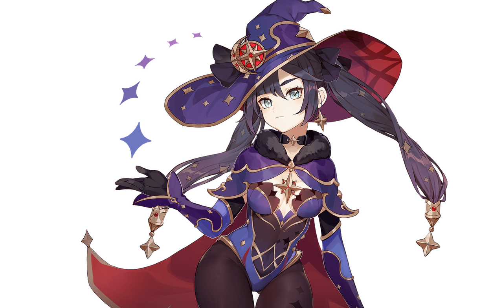
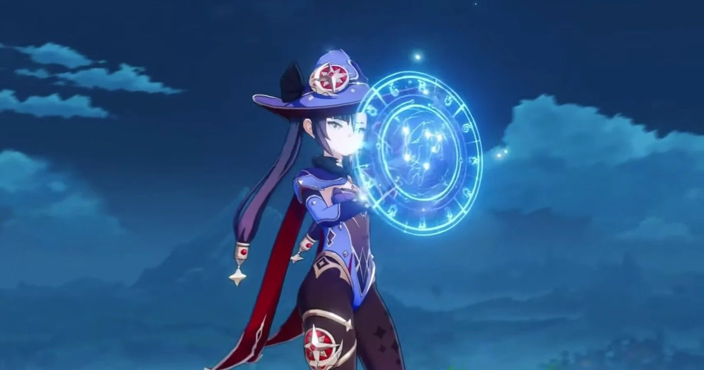

Mona Guide
Mona is a Hydro Catalyst Character that specializes as a Burst Support.
Overview
Mona is popular because of her Burst, which can buff the hell out of any reaction team. She also has a taunt ability which can help with bosses, and an alternate sprint which can weave through enemies. Also she's sexy, so that helps.

Tap: Her Elemental Skill produces a Phantom which taunts all enemies. The Phantom deals 4 ticks of damage (DOT) over 4 seconds, followed by a final instance of Explosion DMG.
Elemental Skill: Mirror Reflection of Doom
Tap: Her Elemental Skill produces a Phantom which taunts all enemies. The Phantom deals 4 ticks of damage (DOT) over 4 seconds, followed by a final instance of Explosion DMG.
Hold: Her Elemental Skill causes Mona to teleport backwards and the AOE taunt replaces her at her previous location. E hold has iframes, which can be used for dodging enemies.
Particle Generation: At the end of the Explosion DMG, Mona’s Elemental Skill generates 3 to 4 Hydro elemental energy particles.
This skill is great. I can be uses to dodge enemy attacks, applies constant Hydro in an AOE, stays on-field, and generates a decent amount of energy.
Elemental Burst: Stellaris Phantasm
Mona summons the sparkling waves and creates a reflection of the starry sky, applying the Illusory Bubble status to opponents in a large AoE.
Illusory Bubble
Traps opponents inside a pocket of destiny and applies Hydro, renders weaker opponents immobile.
When an opponent affected by Illusory Bubble sustains DMG, it has the following effects:
Applies an Omen to the opponent, which gives a DMG Bonus, also increasing the DMG of the attack that causes it.
Removes the Illusory Bubble, dealing Hydro DMG in the process.
Omen:
During its duration, increases DMG taken by opponents.
One of the most technical Elemental Bursts in Genshin Impact. When Mona casts her Elemental Burst, it applies Hydro to all enemies, but without dealing damage. Simultaneously with that, both the Illusory Bubble status and Omen status are applied. Once the Illusory Bubble is applied, any subsequent damage will burst the bubble. That source of damage will gain a DMG% bonus (based on Mona’s Burst skill level).
Constellations
C1: Prophecy of Submersion
Amazing for reaction teams, and makes Mona an even better buffer.
C2: Lunar Chain
Useless unless you want to use Mona as your Main DPS.
C3: Restless Revolution
+3 to her Burst, incredible increase in Omen damage, and is generally great to have.
C4: Prophecy of Oblivion
Really nice extra bonus in a Freeze comp to help round up Crit Rate closer to 100%, and allows your Cryo characters to stat even more aggressively into Crit Damage. With Omen DMG% Buff extensions in a Freeze team you can effectively maintain 73.3–86.6% uptime on both the Omen DMG% and Crit Rate Buff.
C5: Mockery of Fortuna
+3 to her Skill. Great for one-shotting bosses, and is a general damage increase.
C6: Rhetorics of Calamitas
This constellation sucks. It's too gimmicky to use in normal play, and you need to use Mona as a Main DPS to even use it.
Teams
Mona is an amazing Support, and she loves reaction teams. She is very flexible and can fit on many teams.
Mona + Bennett + Kazuha
Mona + Bennett + Sucrose


Mona + Fischl + Beidou
Mona + Ganyu + Diona